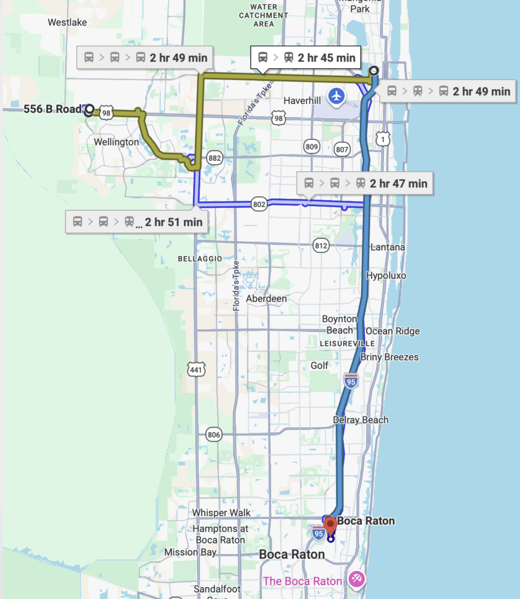
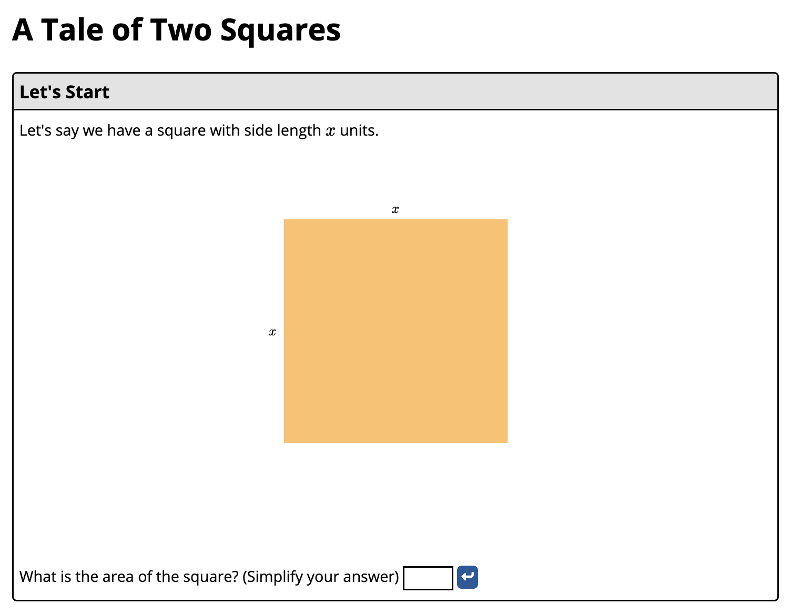
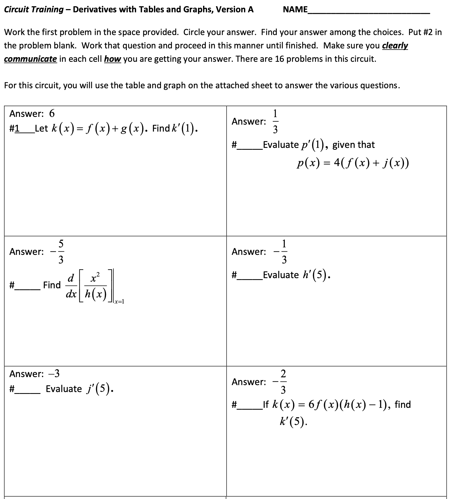
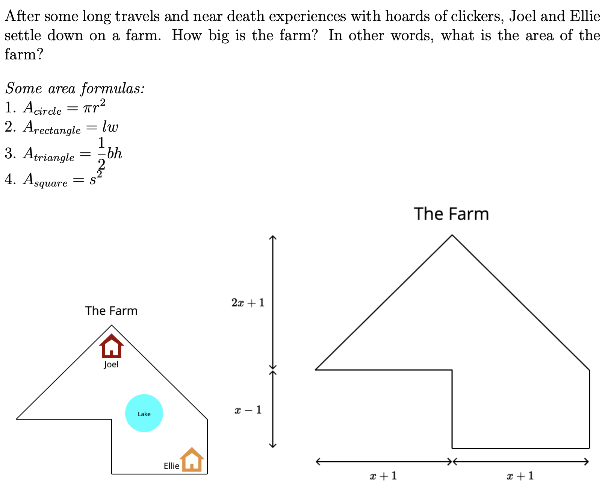

2x + 5
expression · nothing to solve
This was their morning.
Everyday.

Home (Wellington area) → Boca Raton campusFree, open-source math activities with Doenet
Thank you for being here — genuinely. Let's talk about math, the problems with math education, and the people who try to fix them. By the end of the talk, hopefully it will include you as well :)

expression · nothing to solve
equation · “for which x?”
by Vicki Carter, 2019


Same course, same college — after switching to open, custom-built activities.
follow-through pass rate.
independent classrooms
Come be in the next photo!
Join the growing Doenet community. Bring an idea; leave with an activity you built — and people who'll help you make the next one.
For two students on a bus — and every student since.